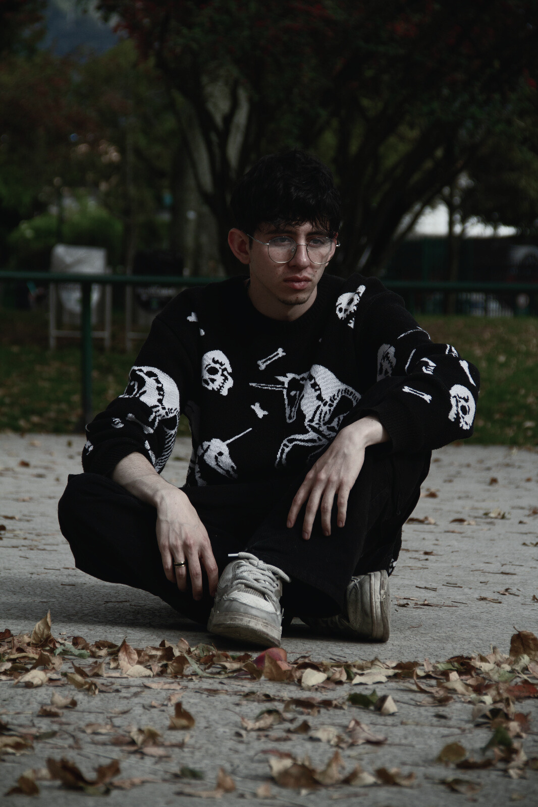
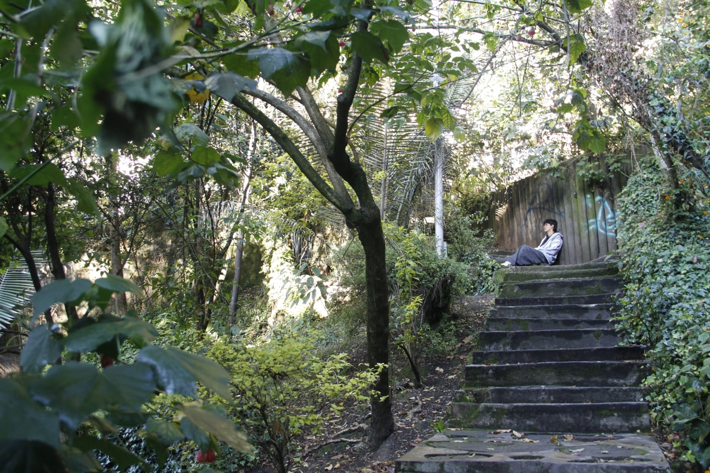
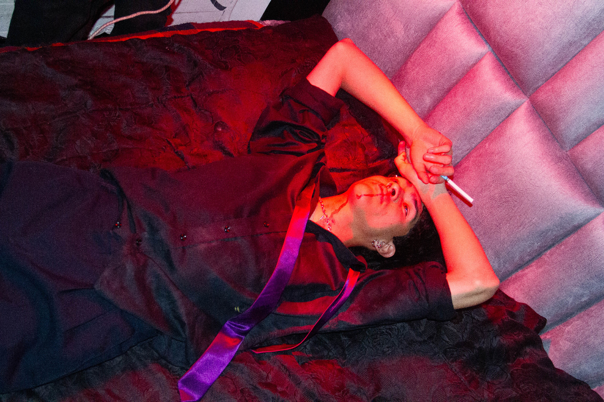
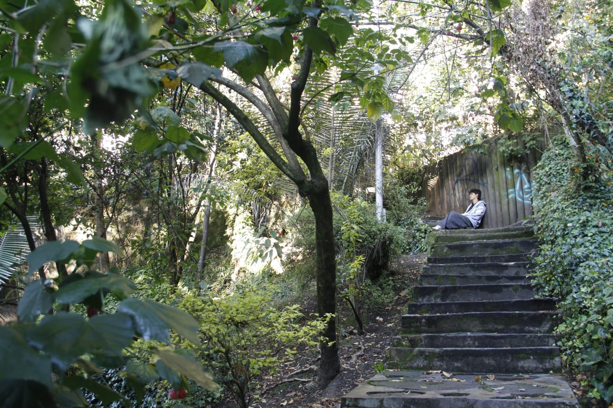
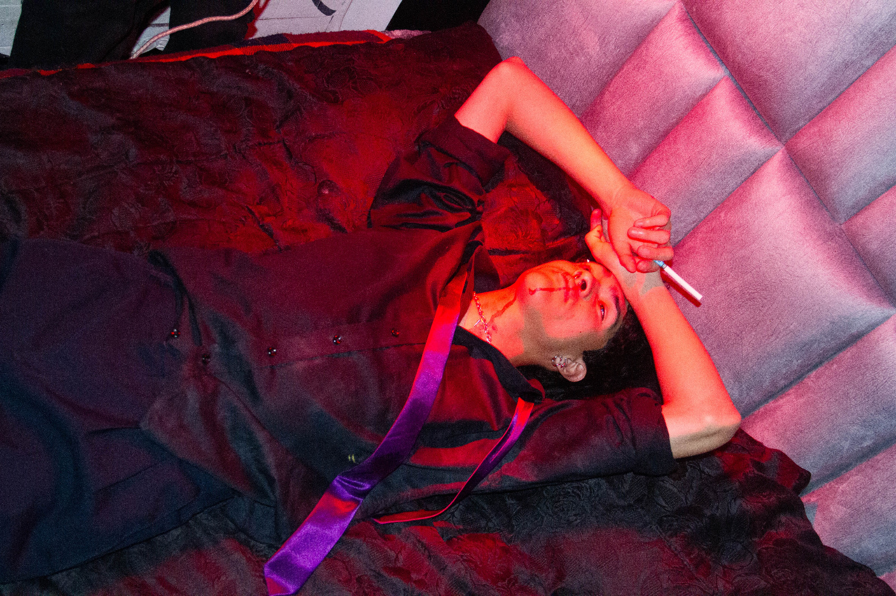

The Science of Sleep / Fotografia
Portfolio Fotografico
Perfil
Estudiante de producción multimedia con conocimientos en Fotografía, diseño y audiovisuales.

DISEÑOS


Aframe
Proyectos recientes, imágenes o tarjetas. Cada entrada puede anclarse a una subpágina o modal.
Fotografía
Muestras de mi arte, mi enfoque y la estetica que tienen mis fotografias.
 



Audiovisual
Proyectos audiovisuales en los que he participado